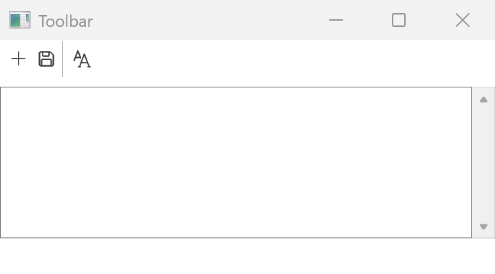

แถบเครื่องมือ (ToolStrip)
ในกล่องเครื่องมือ: แถบเครื่องมือ · เทียบกับ WinForms: ToolStrip
แถบปุ่มรูปภาพใต้เมนู สำหรับคำสั่งที่ใช้บ่อย กดได้ในคลิกเดียว เช่น ใหม่ เปิด บันทึก
- แต่ละปุ่มตั้ง (Name) = ชื่อ method · Text = ข้อความที่ขึ้นเมื่อชี้เมาส์ · Image = ชื่อรูป เช่น
NEW,OPEN,SAVE,SEARCH,REFRESH - ถ้าปุ่มบนแถบเครื่องมือมี (Name) เดียวกับรายการในเมนู สองอย่างนี้ใช้ method เดียวกันและติ๊กพร้อมกัน
- ปุ่มที่ "กดค้าง" ได้ ให้โปรแกรมสลับติ๊กเองด้วย
set_item_checked

อยู่ในกล่องเครื่องมือกลุ่ม เมนูและแถบเครื่องมือ (Menus and toolbars) - ลากมาวางบนฟอร์มแล้วมันจะไปอยู่บนสุดของหน้าต่าง คลิกที่มันในตัวออกแบบเพื่อพิมพ์ชื่อรายการ และตั้ง Properties ของแต่ละรายการ · มันเป็นส่วนหนึ่งของฟอร์ม ไม่ใช่ control รายการแต่ละอันทำงานด้วย method ที่มีชื่อเดียวกับ (Name) ของมัน
ตัวอย่าง
1. ปุ่มในไฟล์ฟอร์ม
# Phai Studio form - docs/phaiform.md
format = 1
[form]
name = "ToolbarDemo"
title = "Toolbar"
size = [360, 170]
start = "center"
[[toolbar]]
id = "new_note"
label = "New"
glyph = "NEW"
[[toolbar]]
id = "save_note"
label = "Save"
glyph = "SAVE"
[[toolbar]]
separator = true
[[toolbar]]
id = "bold"
label = "Bold"
glyph = "FONT"
[[control]]
kind = "textarea"
id = "note"
bounds = [0, 0, 360, 140]
dock = "fill"
[[control]]
kind = "statusbar"
id = "status"
dock = "bottom"2. method ของแต่ละปุ่ม
fn new_note(&mut self, ui: &ToolbarDemoUi) {
ui.note.set_text("");
ui.status.set_part_text(0, "A new note");
}
fn save_note(&mut self, ui: &ToolbarDemoUi) {
let path = std::env::temp_dir().join("note.txt");
let done = std::fs::write(&path, ui.note.text()).is_ok();
ui.status.set_part_text(0, if done { "Saved" } else { "Could not save" });
}3. ปุ่มที่กดค้าง
fn bold(&mut self, ui: &ToolbarDemoUi) {
// A toolbar button that stays down: the program turns its tick over itself.
let on = !ui.item_checked("bold");
ui.set_item_checked("bold", on);
ui.status.set_part_text(0, if on { "Bold on" } else { "Bold off" });
}หน้าต่างตัวอย่างทั้งหมด: toolbar_demo.phf กับ toolbar_demo.rs ในโปรเจกต์ docs/help-src/examples/controls - รันด้วย cargo run -- toolbar
Method
| Method | ทำอะไร |
|---|---|
ui.item_checked("id") | รายการนี้ติ๊กอยู่ไหม (เมนู หรือปุ่มบนแถบเครื่องมือที่ id เดียวกัน) |
ui.set_item_checked("id", true) | ติ๊ก หรือเอาติ๊กออก |
ui.set_item_enabled("id", false) | false เป็นสีเทา กดไม่ได้ · true กดได้ |
Properties
| Property ของปุ่ม | ทำอะไร |
|---|---|
| (Name) | ชื่อของปุ่ม และชื่อ method ที่ทำงานเมื่อกด |
| Text | ข้อความที่ขึ้นเมื่อชี้เมาส์ |
| Image | ชื่อรูปจากชุดไอคอนของ Windows เช่น SAVE |
| Checked | กดค้างไว้ตั้งแต่เปิดหน้าต่าง |
| Enabled | กดได้ หรือเป็นสีเทา |
| Separator | เป็นเส้นคั่นแทนปุ่ม |
Events
| Event | ทำอะไร |
|---|---|
| Click | กดปุ่ม - method ชื่อเดียวกับ (Name) ของมัน |
| CheckedChanged | ปุ่มถูกกดค้างหรือปล่อย |
| ItemClicked | ของแถบทั้งแถบ (อยู่ใน Events ของฟอร์ม): ปุ่มไหนก็ตามถูกกด |
ลองทำเอง
- เพิ่มปุ่ม "เปิด" (รูป
OPEN) ที่อ่าน note.txt กลับมา - ทำเมนู File ที่มีรายการ New และ Save ชื่อเดียวกับปุ่ม แล้วดูว่าใช้ method เดียวกัน